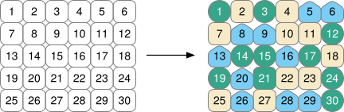
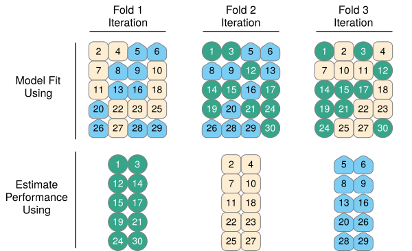
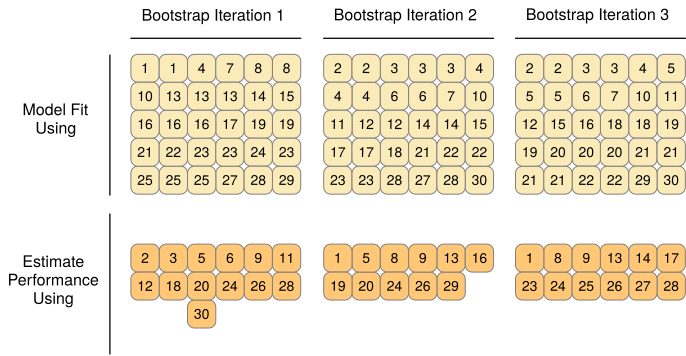
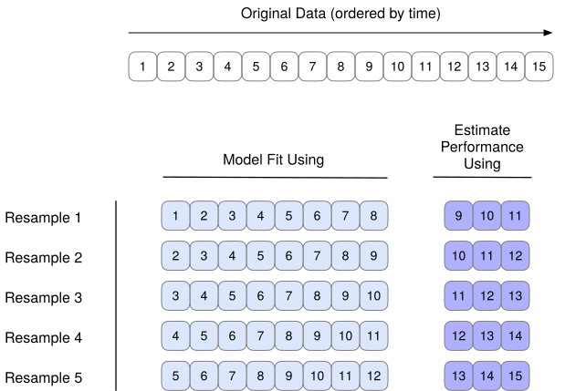

Lecture 6 (Part 1): Resampling Methods
Estimating Performance Honestly
Quick reminder: what we’re trying to estimate
We want the model’s performance on new data.
But we only have:
- one dataset
- one realized sample of “the world”
- finite size (and often class imbalance)
Why we care in finance
Model performance matters because decisions have costs:
- false positives vs false negatives (credit risk)
- asymmetric losses (risk management)
- stability matters (models used repeatedly)
A single train/test split is a roll of the dice
Even with the same dataset + same model:
- random split changes the training sample
- random split changes the test sample
- measured performance moves because of sampling noise
- the test set is a final exam: don’t use it for model selection or hyperparameter tuning
Thought experiment
Two analysts do the same thing:
- Analyst A: AUC = 0.96
- Analyst B: AUC = 0.92
They both used the same code and model—just different splits.
So…which is “the true performance”?
What resampling does (conceptually)
Resampling replaces:
“one held-out set”
with
“many plausible held-out sets”
Then:
- compute performance on each
- summarize as mean + spread
Vocabulary check
- Parameter: learned from data (e.g., logistic regression coefficients)
- Performance estimate: computed from predictions (e.g., AUC on holdout)
- Resampling: repeated fitting/evaluation using structured re-use of the dataset
Resampling menu
- Validation set approach (single split)
- LOOCV (leave-one-out)
- k-fold cross-validation
- bootstrap (uncertainty / sampling with replacement)
- rolling / expanding window (time series; finance default)
The validation set approach
What it is
- Split data into train and test
- Fit the model on train
- Evaluate on test
- You get one estimate of out-of-sample performance
Why it’s used
- simplest conceptually
- fastest to run
- good for quick sanity checks
Why it’s risky
- estimate depends on which observations land in test
- can be misleading for rare events
- not suitable for model selection / hyperparameter tuning (you’ll overfit the split)
What makes validation-set estimates noisy?
- smaller training set (less stable fit)
- smaller test set (less stable evaluation)
- for imbalanced outcomes: which rare cases land in test matters a lot
Practical example: rare events
If the event is rare (defaults, fraud, churn):
- the test set might contain “not many” events
- metric values become sensitive to which events land in test
- repeated splits can vary surprisingly
LOOCV (Leave-One-Out CV)
How it works:
- hold out 1 observation
- train on the other \(n-1\)
- repeat \(n\) times
- aggregate error / AUC / etc.
Why it’s appealing:
- uses almost all observations for training each time
Why it’s not always best:
- computational cost
- still can have high variance (depends on the problem)
When LOOCV is most useful
LOOCV is often used when:
- \(n\) is small
- model is fast to fit
- you want an “almost unbiased” training-size effect
In modern practice:
- k-fold is often the default anyway
k-fold cross-validation (the workhorse)
How it works:
- split into \(k\) folds
- repeat:
- train on \(k-1\) folds
- validate on the held-out fold
- aggregate fold-wise performance
Typical choices:
- \(k=5\) or \(k=10\)
Visual: k-fold CV

Visual: 3-fold CV

Visual: CV iterations

Why do we like k-fold CV?
k-fold CV tends to be a good compromise:
- more stable than one split
- less computationally expensive than LOOCV
- works well for many model classes
Choosing k: the intuition
- Smaller \(k\) (e.g., 5):
- bigger validation fold
- fewer models to fit
- sometimes slightly noisier, faster
- Larger \(k\) (e.g., 10):
- smaller validation fold
- more models to fit
- often a bit more stable
What CV produces (how to read it)
CV gives you a set of fold-wise scores:
- AUC\(_1\), AUC\(_2\), …, AUC\(_k\)
From that you can compute:
- mean CV AUC
- SD (spread across folds)
- SE (uncertainty in the mean, if you want it)
What does “spread” mean?
If fold-wise scores vary a lot:
- the problem may be unstable / noisy
- your model may be overfitting
- performance might be sensitive to which observations you train on
If fold-wise scores are tight:
- performance is more stable
- you can trust comparisons more
Train / CV / Test roles
Big picture workflow
- Training set: fit parameters
- CV (inside training): compare models, tune settings, choose features
- Test set: final evaluation (one-time, no iteration)
Inside each CV fold
analysis set: the fold’s training data
(fit the model here)assessment set: the fold’s validation data
(score the model here)
Common mistake: test set leakage
If you:
- choose features based on test results
- tune hyperparameters based on test results
- choose threshold based on test results
…then your test performance is optimistic.
Leakage: a concrete checklist
Leakage happens whenever information from validation/test influences training.
Common ways:
- preprocessing using full dataset (mean/SD, imputation, PCA)
- feature selection using full dataset
- tuning settings using the test set
- “peeking” at the test set repeatedly
Paired comparisons (important in practice)
When comparing Model A vs Model B:
- use the same folds
- compute fold-wise differences
- summarize differences (mean diff + SD)
Why this helps:
- reduces noise from fold composition
- makes comparisons more fair
Stratification (small but important)
For classification with imbalance:
- build folds that preserve class proportions
- many tools offer
strata = outcome
Why it matters:
- prevents “event-free” folds
- reduces variance in fold-wise metrics
Metrics choice matters
For rare events:
- accuracy can look great even for useless models
- AUC is often better for ranking
- threshold-based metrics depend on business objectives
Bootstrap resampling (quick but clearer)
Bootstrap:
- sample \(n\) observations with replacement
- fit on bootstrap sample
- evaluate (often) on out-of-bag observations
- repeat many times

CV vs bootstrap (how to remember)
- CV: “How good is the model out-of-sample?”
- Bootstrap: “How variable is this estimate / coefficient / prediction?”
(There is overlap, but that’s the mental model.)
Time series caveat (finance)
For time series:
- random splits break temporal structure
- random folds leak future into past
Better evaluation:
- rolling window (fixed size)
- expanding window (grows over time)

v-fold cross-validation with rsample
Goal: estimate performance more reliably than a single split
Key idea:
- create many train/validate splits (folds)
- fit on one part, evaluate on the held-out part
- summarize performance across folds
initial_split() vs vfold_cv()
Single split (validation set approach)
initial_split(df, prop = 0.7)- then:
training(split),testing(split)
v-fold CV
vfold_cv(df, v = 10)- then:
analysis(split),assessment(split)
What vfold_cv() returns
vfold_cv() returns a tibble with:
- an
idfor each fold - a
splitscolumn (each row contains one split object)
So you can think:
- one row = one fold
- one split = analysis + assessment
Inside each fold: analysis vs assessment
Within a given fold split:
analysis set
“fit here” (like training data)assessment set
“score here” (like validation/test data)
Important:
- every observation appears in an assessment set exactly once (across all folds)
Stratified v-fold CV (recommended for classification)
If your outcome is imbalanced (rare events), use stratification:
vfold_cv(df, v = 10, strata = outcome)
Why:
- keeps class proportions similar in each fold
- reduces fold-to-fold weirdness (e.g., “almost no events in this fold”)
The workflow you should follow
- Create a final train/test split (test = final exam)
- Create v-fold CV folds inside training only
- Use folds to:
- compare models
- tune hyperparameters
- choose features / preprocessing decisions
- Evaluate once on the test set at the end
What you compute from CV
From the folds you’ll get:
- fold-by-fold metric values (e.g., AUCs)
- mean CV performance
- spread across folds (SD)
Interpretation:
- mean = your best estimate
- spread = stability / uncertainty
Wrap-up (Part 1)
If you remember one thing:
- One split is noisy
- CV gives a distribution, not a single number
- Keep the test set for the final exam
Next (Part 2):
- KNN as a flexibility knob
- scaling + leakage (feature engineering toe dip)
- CV for tuning and comparison